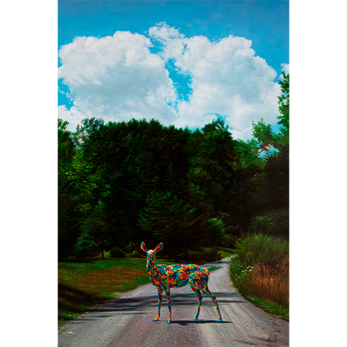
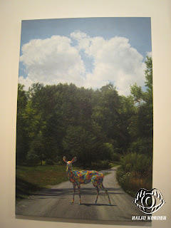

Exhibitions
Popaganda in Japan, Public Image. 3D, Tokyo, Japan, July 1–18, 2011.
Evolutionary Alternatives, Tribeca Grand Hotel, New York, New York, US, November 19, 2014.
Notes
Ron English assembled and photographed a reference set as a model for this work.
This work appears in Kaiju Korner’s exhibition photographs of Popaganda in Japan.
This work appears in Art & Fashion Salon’s exhibition photographs of Evolutionary Alternatives at Tribeca Grand Hotel.
This composition was also reproduced as one of the images included in the Ron English Postcard Set sold by Clutter.
Ancillary Documentation



Selected Online Circulation
Selected examples of the work’s online circulation, reproduction, or discussion. This list is not exhaustive; it is intended to document representative appearances of the image beyond formal exhibition and publication records.